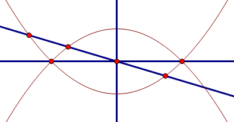

[几何] 来自群的焦点弦与抛物线围成面积
爱好/kel/yb緈諨(3977*****) 21:43:55
抛物线y^2=4ax，过焦点的弦与抛物线围成面积的最小值
这道题怎么做简单
群管-kuing/bb/jy/cd 21:45:09
目测
爱好者-林 21:46:17
是不是垂直？面积最小？
群管-kuing/bb/jy/cd 21:47:26
显然的

(9.23 KB)
2012-12-19 21:56
这样就行了
群管-kuing/bb/jy/cd 21:48:17
一倾斜，左边上升的面积比右边下沉的面积要大
|
本主题由 kuing 于 2013-1-19 15:04 分类
 发表于 2012-12-19 21:56
发表于 2012-12-19 21:56